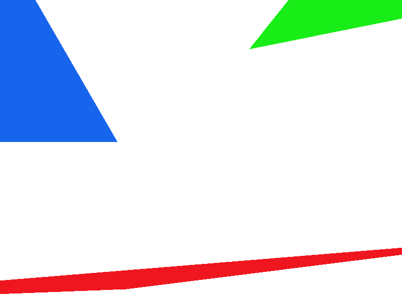
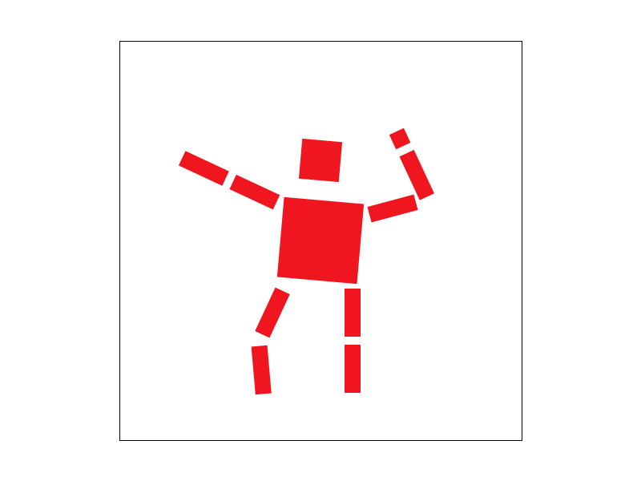
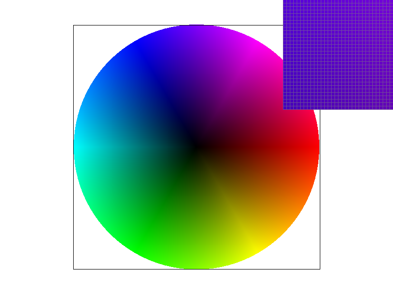

CS184/284A Fall 2026 Homework 1 Write-Up
Link to webpage: https://github.com/cal-cs184-student/hw1-pax-writeup
Link to GitHub repository: https://github.com/cal-cs184-student/hw1-pax
Overview
This project handles rasterization of images, mainly from SVG files to images. The crux of the project is how to sample an image to render it on the screen in a visually appealing way. Multiple techniques for rendering and antialiasing are also implemented and analyzed, such as supersampling, interpolating using barycentric coordinates, pixel sampling methods, and level sampling methods.
Task 1: Drawing Single-Color Triangles
Triangle rasterization is just a way to render a triangle on a screen by calculating which pixels to fill in. It works by bounding the triangle within a set of x and y coordinates, then iterating over the edges of the boundary and calculating whether or not the center of the pixel sits within the triangle boundary. If it is within the triangle, then the pixel is filled with a color. For my implementation of triangle rasterization, I used line tests for each edge to check the pixel. These are calculated as w0, w1, w2. I also calculate the bounding box using the min and max values of x and y. This algorithm checks only samples within the bounding box that are not out of the display bounds, so it cannot be any worse than one that just checks within the bounding box (since checking within the bounding box is inherently a condition for my algorithm already has that as a condition also).|
 |
Task 2: Antialiasing by Supersampling
Supersampling is useful to handle antialiasing, as rendering a curved line on a 2d set of pixels will introduce jagged edges or steps along the edge. By implementing supersampling, it makes the triangle edges much smoother. For example, in the image, the triangle vertex is very thin, and thus a lot of detail is lost in the original rasterization. The pixels jump colors, and the edge looks very jagged - doesn't look like a straight line as a triangle edge should look. You can clearly see the steps on the triangle from the original display trying to emulate the line. However, at higher sampling rates, the edge looks much smoother as the color gradually changes along the line - since the supersample averages the color in each pixel, it doesn't make direct steps, and thus has a much smoother edge.
First, I calculated how many more pixels there would be in each dimension of the buffer. For example, a 4x sample rate would be a 2x2 supersample, as the buffer would be twice as wide and twice as high. This is saved in sqrt_rate (square root of the sampling rate; since the supersample area is a square, each edge is multiplied by the square root of the overall increase). For this, I also needed to resize the buffer vector sample_buffer to allocate more space for the extra pixels being sampled by calling .resize() on sample_buffer. The buffer is filled with white by default using clear_buffers().
Next, I iterate over the bounding box as usual (calculated as the min/max of x and min/max of y). The difference here from task 1 is that I also iterate over the subsamples sy and sx for by calculating offset from the original pixel, then doing the same calculation for if the subsample is within the triangle bounds. Adding 0.5 puts the sample at the center of each subsample rather than the corner, which is better. After this is finished calculating, resolve_to_framebuffer() is called, which takes the supersample area for each pixel (2x2 for 4x sample rate) and averages the colors for the pixels in the area.
In the below pictures, the higher supersampling causes pixels in between the original image to slowly blend the colors, providing a more true to life display. This is because each pixel blends the theoretically higher resolution triangle, allowing it to display "information" that was not inside the original triangle at 1x.

|

|

|
Task 3: Transforms
For cubeman, I transformed his components so it looks like he's hitting a dance move. I rotated each part of his left leg to simulate the bending of his leg. This caused the bottom section to be out of line with where the knee would be - I had to translate it left to match. Then, I performed similar transformations on his right arm. I also added an extra rectangle to simulate his fist. His left arm is rotated to point at a presumably off-screen dance partner. Finally, I rotated his torso and head to match body orientation.
|
 |
Task 4: Barycentric coordinates
Barycentric coordinates are just an interpolation problem - trying to find a point within a triangle. This can be computed using the vertices of the triangle along with a weight for each triangle (alpha beta gamma), where the weights sum to 1. Essentially, these weights are a measure of how close the edge opposite its corresponding vertex is (and can be measured using the opposing edge of the vertex as it scales with the sub area of the triangle it makes with the point). Since the weights add up to one, there are only two degrees of freedom as the third one is just 1 minus the first two. This matches the 2d space that the triangle is in.
Since the 3 weights are a representation of the distance from each side, if you assign each weight to a color, it will create a gradient of colors as you move around the triangle. This is because moving around the triangle will adjust how much of each color is put in the closer it is to its corresponding vertex. For example, a triangle with vertices A (alpha/red), B (beta/blue), and C (gamma/green) would fill the pixel with red at vertex A. The reasoning is that at vertex A, it is as far away from the opposite edge as possible, meaning it equals 1 - this makes the other 2 weights equal to 0, so the pixel is filled with solely the red color. On the edge between vertex A and B, a little bit of red and blue is added, but gamma is still equal to 0 so there is no green. This makes the colors between A and B varying levels of purple.
|
 |
Task 5: "Pixel sampling" for texture mapping
Pixel sampling is just when convert an image or texture to pixels by mapping out which part of the image/texture goes to which pixel, then filling in the pixel with the associated colors. Bilinear interpolation is when for each pixel, you take the 4 surrounding pixel values, and interpolate the values between them to fill in the pixel you are trying to display. This works better when you get farther away(magnification), as pixels will be in between points, so interpolating will preserve more of the original textures. This is opposed to nearest-neighbor, which just takes the closest pixel; this will be better when you get closer (or when you have more pixels), since there will be more points for each pixel, so less information lost between points.
For implementation with the texture map, it's a little similar to the barycentric weights, but it's mapped to a texture map coordinate instead (u,v) instead. Interpolate_uv does what the function name suggests, and calculates weights for each vertex and calculates the value at the point inside the texture map. This is passed to the sampling algorithm through tex.sample using parameter SampleParams sp, which also takes psm (the chosen pixel sampling method). sample_nearest just gets the closest texel using get_texel, and sample_bilinear gets the nearest 4 texels and interpolates between them.
Bilinear is better on the below pictures because the map contents have a lot of "world" information for each pixel, so interpolating between the texture allows it to display more information.

|

|

|

|
Task 6: "Level Sampling" with mipmaps for texture mapping
Level sampling is a way to scale up or down the resolution of a texture to map each pixel to depending on how many world pixels each pixel might cover. This allows the sampling to keep as much information as possible while minimizing the calculations (since you can use "less" pixels depending on what level you are at). This is done using a mipmap, which pre-computes multiple lower resolution versions of a texture map, and then using those versions depending on what level is calculated. Level is calculated by estimating the texture footprint versus the surrounding pixel samples (the texture coordinates might have a bigger change from pixel sample to another).
To implement this, I take the neighboring screen samples dx_uv and dy_uv, and compute the level by calculating the distance from each screen sample to the current screen sample and taking the base 2 log of it (since resolution scales in powers of 2). This works because it estimates the space spanned by in the texture by each pixel on the screen, so the more space it spans the less detail is needed.
Between pixel sampling, level sampling, and the number of samples per pixel (supersampling), supersampling is the slowest by far since it scales the number of operations per pixel exponentially. Next are level and pixel sampling. If level is set to 0 or nearest, t should take the same amount of lerps and texel reads as pixel sampling, since they choose the nearest mip level or no level at all (1 texel read and 0 lerps for nearest pixel sampling, and 4 texel reads and 3 lerps for bilinear pixel sampling). If bilinear level sampling is chosen, then it doubles the texel reads and lerps (1 per level), then adds an extra lerp between the two. Supersampling also takes a lot of memory since you need to scale the sample buffer up by the pixel multiple. Level sampling uses extra memory since it has the mipmap, while pixel sampling takes no extra memory. As far as antialiasing goes pixel sampling blends textures smoothly to the pixels, but doesn't take into acocunt the distance so is subject to minification problems. Level sampling accounts for distance so handles magnification and minifcation problems while also blending between textures. Supersampling blends between pixels well so handles jaggies and moire, but also ignores texture scale so is expensive.

|

|

|

|